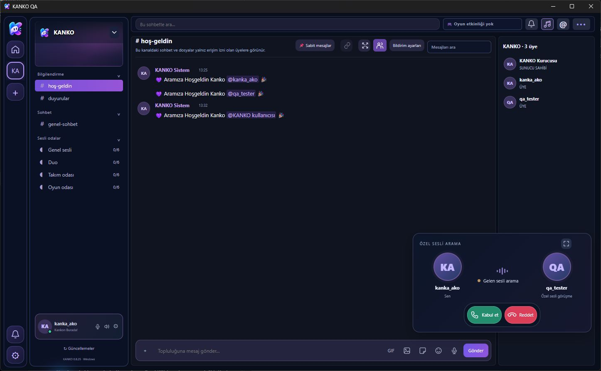
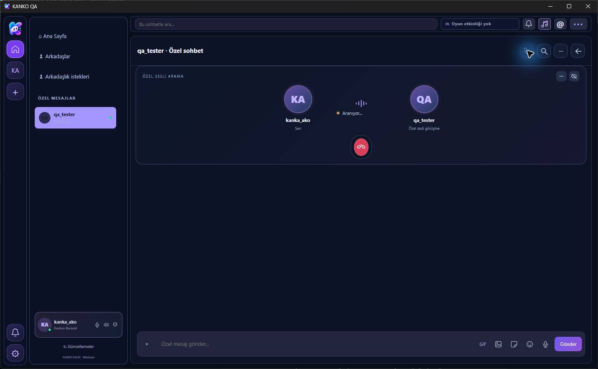
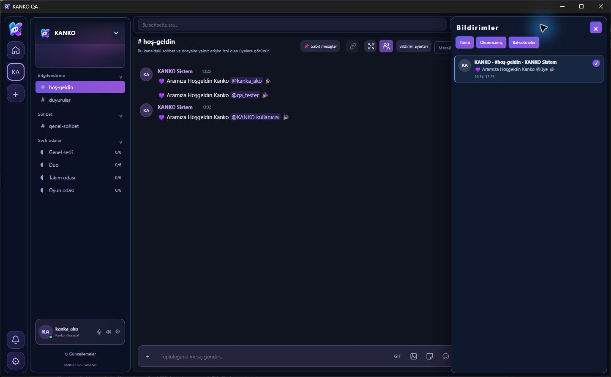

Mesafe var.
Arada sessizlik yok.
Topluluğunu oluştur, davet bağlantını paylaş. Metin kanalları, sesli odalar ve topluluğa özel rollerle ekibini bir arada tut.
Oyun bitse de sohbet bitmez.
Sesini aç, ekranını paylaş, sevdiğin şarkıyı sıraya ekle.
Topluluk kanalları ve özel sesli aramalarla kankaların burada.
Windows masaüstü uygulaması · v0.8.55
0.8.55 güncellemesi yayımlandı. Günlük ücretsiz sunucu kotası nedeniyle yeni girişlerde ve bazı çevrimiçi işlemlerde geçici kesinti yaşanabilir.
Yayın adayının gerçek Windows uygulamasından alınan yerel QA görüntüleri. Bunlar canlı kullanıcı etkinliği veya gerçek donanım testi kanıtı değildir.



BİRLİKTE DAHA İYİ
Oyun gecesinden günlük muhabbete.
İhtiyacın olanlar, aynı yerde.
Topluluğunu oluştur, davet bağlantını paylaş. Metin kanalları, sesli odalar ve topluluğa özel rollerle ekibini bir arada tut.
Topluluk sesli odasında oyununu ya da ekranını paylaş. Özel sesli görüşmelerde ekran paylaşımı şu anda desteklenen bir özellik olarak sunulmuyor.
Topluluğunu oluştur, ayrı metin ve ses kanallarında buluş. Arkadaşlarınla özelden mesajlaş veya birebir sesli arama başlat.
YouTube’da şarkı ara, sıraya ekle ve odada birlikte dinle. Oynat, duraklat, sıradakine geç; sesini kendine göre ayarla.
0.8.55 / GÜNCEL WINDOWS SÜRÜMÜ
KANKO 0.8.55; açılışta gereksiz sesli ekranın görünmesi, kanal geçişleri, üye listesi ve ekran paylaşımı performansı düzeltmelerini içerir. İndirme düğmeleri yayımlanan Windows kurulumuna gider.
İki avatarlı görüşme paneli, ayrı mikrofon ve ses çıkışı aygıt menüleri; sohbetten kopmadan küçültme ve gizleme.
Gelen özel arama paneline tekrarlanan zil sesi eşlik eder. Kabul, ret, iptal ve zaman aşımında zil durur. Sessiz mod ve rahatsız etmeyin tercihi korunur.
Özel mesajlar, arkadaşlık istekleri, bildirim merkezi ve kayıtlı durumlara dayanan sade arama geçmişi.
Engelleme özel mesaj, arkadaşlık isteği ve özel aramayı kısıtlar. Eski mesajlar silinmez; engel kaldırılınca eski arkadaşlık kendiliğinden geri gelmez.
Metin kanalları ve sesli odalar için ayrı yazışma geçmişi. Sesli odanın sohbetini açmak, odaya sesle katılmayı gerektirmez.
Kategoriler, davetler, kurallar ve sunucuda denetlenen roller. Yeni üyelerin başlangıcı ve ayrılma tercihi yerel QA ortamında kontrol edilir.
BULUŞMAK BU KADAR KOLAY
Windows uygulamasını bilgisayarına kur.
Davet bağlantısını arkadaşlarına gönder.
Konuş, ekranını paylaş, birlikte müzik dinle.
WINDOWS UYGULAMASINDA
KANKO’da bugün kullanabileceğin özellikler.
Görsele dokun, temayı tam boyutta incele.


Kalıcı ses odaları, davet bağlantıları, arkadaş istekleri ve özel mesajlar. Kısa bağlantı kesintilerinde otomatik yeniden katılma.
Katılımcı kartından yayını aç; geniş izleme veya tam ekran kullan. Yayın sesi ve paylaşım kalitesini OYUN. SOHBET. DOSTLUK. Bir oda aç. Kankalarını çağır. İyi vakit geçir.
Bu akşam nerede?
KANKO’da.